ПИВО + САРДИНА = КРИПТОРАЙ ПИВО + САРДИНА = КРИПТОРАЙ ПИВО + САРДИНА = КРИПТОРАЙ ПИВО + САРДИНА = КРИПТОРАЙ ПИВО + САРДИНА = КРИПТОРАЙ ПИВО + САРДИНА = КРИПТОРАЙ

Что может быть лучше холодного пивка после тяжёлого дня? Что может быть лучше холодного пивка после тяжёлого дня? Что может быть лучше холодного пивка после тяжёлого дня?